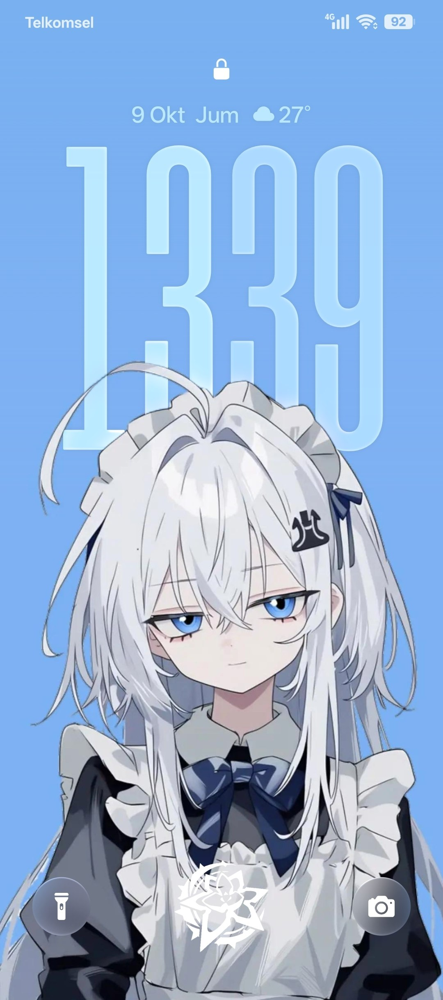

Daftar kontributor hebat yang telah berdedikasi membantu nge-fix bug krusial, mengoptimalkan sistem,
serta menjaga kestabilan port rom ColorOS 17 China Beta.
7
Fixer &
Devs
13
Total
Contributors
0%
Stable
Build
ColorOS 17 For Infinix HOT 50 Pro Plus
Unduh file porting resmi ColorOS 17 China Beta yang telah dioptimalkan dan di-fix langsung
untuk INFINIX HOT 50 PRO PLUS
v17.0.0.100
PLG
CN01
Merasakan pengalaman antarmuka kelas flagship kini hadir di Infinix Hot 50 Pro+ Anda! Port ROM
ini dirancang khusus untuk menghadirkan kestabilan tingkat tinggi, dipadukan dengan berbagai
fitur eksklusif dari ColorOS 17 China Beta.
Ukuran File
8.03 GB
Untuk Devices
Infinix HOT 50 Pro
Plus
Kernel
SELinux Permissive
Pratinjau antarmuka
ColorOS 17

Ingin Lihat Lebih
Banyak?
Lihat
screenshot selengkapnya dan pembaruan fitur lainnya langsung di grup
Telegram resmi kami.
Buka Grup Telegram